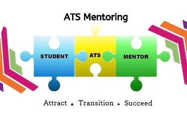

Getting out of your Comfort Zone
Other than helping others, a major benefit of volunteering is being forced to get outside of your comfort zone. Giving guided tours to first years and organising large scale events made me much more confident and outgoing.
Being Part of a community on campus
ATS Mentoring has a very active community on campus. By organising events such quiz nights and raffles there is a real sense of community among the volunteers.
Awards from the University
NUI Galway presents ATS Mentors with a President's Award as well as the Employability award for our volunteer work with the University. Not only is it nice to recieve an award for our work but these awards also make your Curriculum Vitae stand out when looking for a job in the future.